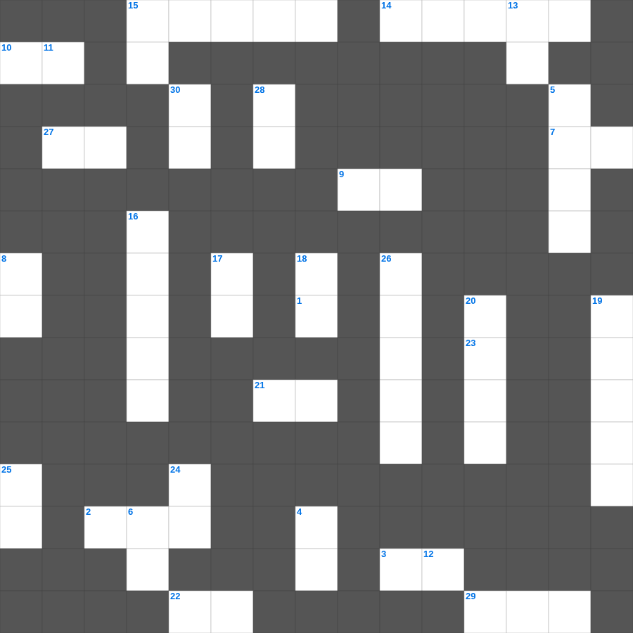

잠언 마스터 100 (2/2)
📌 서비스 정의
십자가로세로는 교회 주보와 주일학교에서 사용할 수 있는 성경 기반 가로세로 퍼즐 서비스입니다. 성경 인물, 사건, 핵심 구절을 바탕으로 제작되었습니다. 온라인 풀이 및 인쇄 기능을 제공합니다.
📖 잠언란?
잠언은 솔로몬을 중심으로 기록된 지혜의 말씀 모음으로, 일상생활과 인간관계, 신앙생활에 적용할 수 있는 실천적 교훈을 담고 있습니다.
📚 잠언의 주요 사건·주제
지혜의 근본은 여호와를 경외함 · 지혜와 우매를 대조하는 교훈 · 현숙한 여인에 대한 교훈 · 왕과 통치자를 향한 교훈 · 일상의 처세에 관한 잠언들
오늘은 잠언의 주요 내용을 담은 잠언 주일학교 퀴즈를 준비했습니다. 총 35개의 힌트가 있으며, 주일학교 교재나 성경공부 자료로 활용하기 좋습니다. 무료로 즐기는 잠언 가로세로 퍼즐을 지금 바로 풀어보세요!

📝 가로 힌트
1. 하나님은 하늘에 계시고 너는 이것에 있음이니라 그런즉 마땅히 말을 적게 할 것이라
2. 믿는 상전이 있는 자들은 그 상전을 형제라고 가볍게 여기지 말고 더 잘 이것하게 하라
3. 서른째 해 넷째 달 초닷새에 내가 이것 강 가 사로잡힌 자 중에 있을 때에
6. 새 노래로 여호와께 찬송하라 그는 이것 한 일을 행하사
7. 너의 사랑하는 자가 남의 사랑하는 자보다 나은 것이 무엇이기에 이같이 우리에게 이것 하는가
9. 친구의 아픈 책망은 이것으로 말미암는 것이나 원수의 잦은 입맞춤은 거짓에서 난 것이니라
10. 애가의 마지막 절에서 구하는 것
13. 예수께서 예루살렘에 입성하실 때 타신 것
14. 왕이 하만을 나무에 달라고 명령한 내시의 이름
15. 주의 이름이 온 땅에 어찌 그리 이것한지요
19. 왕이 그들에게 모든 일을 묻는 중에 그 지혜와 총명이 온 나라 박수와 술객보다 이것 배나 나은 줄을 아니라
21. 그러나 이것은 그 길에 걸려 넘어지리라
22. 히스기야가 기도로 병 고침 받은 후 교만했다가 다시 행한 것
23. 낮의 해가 너를 상하게 하지 아니하며 밤의 이것도 너를 해치지 아니하리로다
27. 내 신부야 너는 레바논에서부터 나와 함께 하고 레바논에서부터 나와 함께 이것
29. 왕이 잔치를 베푼 도성 이름
📝 세로 힌트
4. 여호와여 내가 알거니와 사람의 길이 자신에게 있지 아니하니 이것을 걷는 자에게 있지 아니하니이다
5. 애가에서 예루살렘을 비유한 표현 (슬픔의 상징)
6. 욥의 딸들이 얻은 것 '그들의 오라비들처럼 이것을 받았더라'
7. 아굴의 잠언에서 '나를 가난하게도 마옵시고 이것하게도 마옵소서'
8. 내가 해 아래에서 행하는 모든 일을 보았노라 보라 모두 다 헛되어 이것을 잡으려는 것 같도다
11. 느헤미야가 마지막으로 하나님께 구한 말 '나를 기억하사 이것을 주옵소서'
12. 너는 하나님의 집에 들어갈 때에 네 이것을 삼갈지어다
13. 아비야 왕이 전쟁 중 하나님께 부르짖을 때 제사장들이 분 것
15. 그들은 이것처럼 언약을 어기고 거기에서 나를 반역하였느니라
16. 모르드개의 민족적 정체성
17. 많은 재물보다 이것을 택할 것이요 은이나 금보다 은총을 더욱 택할 것이니라
18. 할렐루야 우리 하나님을 찬양하는 일이 선함이여 찬송하는 일이 아름답고 이것하도다
19. 오병이어 기적 후 남은 조각의 양
20. 요담 왕이 암몬 자손에게 조공으로 받은 은의 무게
24. 황소와 염소의 피가 능히 죄를 이것하지 못함이라
25. 이와 같이 행함이 없는 믿음은 그 자체가 이것 것이라
26. 아하시야 왕이 이스라엘 왕 요람과 함께 싸우러 간 장소
28. 민간에 거짓 선지자들이 일어났었나니 이와 같이 너희 중에도 거짓 이것들이 있으리라
30. 오늘 우리에게 일용할 이것을 주시옵고
🧩 이 퍼즐에서 배우는 내용
이 퍼즐은 잠언 마스터 100 (2/2)의 핵심 단어와 개념을 자연스럽게 복습할 수 있도록 구성되었습니다. 주일학교 수업이나 개인 성경공부에서 학습 내용을 점검하는 용도로 바로 활용할 수 있습니다.
🧑🏫 교회 교육 자료 활용
이 퍼즐은 주일학교 교재 추천 자료로 활용할 수 있고, 주일학교 주보에 넣기 좋은 분량으로 구성되어 있습니다. 수업용 주일학교 교안에 활동지로 붙이거나, 예배 후 복습용 주일학교 공과교재로 바로 사용할 수 있습니다.
🏷️ 키워드
잠언 주일학교 퀴즈, 잠언, 십자가로세로, 성경퀴즈, 말씀퀴즈, 가로세로퍼즐, 주일학교 교재 추천, 주일학교 주보, 주일학교 교안, 주일학교 공과교재